8. Interpretabilidad: SHAP y LIME#
Autores: María Carolina Cantillo Orozco (200179105) y Juan Camilo Oñoro Araujo (200177329)
Qué responde este capítulo
Pregunta. ¿Qué variables deciden el estrato que predice el modelo, en general y en una vivienda concreta? ¿Coinciden SHAP y LIME?
Respuesta corta. La ubicación y el entorno, no la vivienda: la posición norte-sur, la distancia al centro y el área y los baños de los vecinos. El estrato 1 lo explica sobre todo la distancia al centro; el 6, el norte de la ciudad y vecinos con viviendas grandes. LIME coincide solo en parte con SHAP y se aparta con variables correlacionadas o binarias.
SHAP reparte la predicción de una vivienda entre sus variables con los valores de Shapley de la teoría de juegos cooperativos: la contribución de una variable es su aporte marginal promedio sobre todas las coaliciones posibles de las demás. Es la única atribución que cumple a la vez eficiencia (las contribuciones suman la diferencia entre la predicción y el promedio), simetría (dos variables intercambiables reciben lo mismo) y aditividad. Para XGBoost se calculan exactos con TreeSHAP; para otros modelos, por permutaciones.
LIME ajusta, alrededor de una vivienda, un modelo lineal local sobre perturbaciones de sus variables (discretizadas en cuartiles) ponderadas por su cercanía. Es más barato, pero su explicación depende del radio del vecindario y del muestreo, no garantiza que las contribuciones sumen la predicción y puede cambiar entre corridas.
Cuándo divergen. Con variables correlacionadas (área, baños y habitaciones; x, y y distancia al centro) LIME perturba cada una por separado y crea viviendas imposibles, mientras SHAP reparte el efecto entre las correlacionadas. Con efectos muy no lineales o interacciones (la ubicación cambia el efecto del tamaño), una aproximación lineal local puede ser mala lejos del punto. En esos casos sus rankings de variables difieren.
Qué modelos se explican. La guía pide SHAP para el mejor modelo de cada tarea y la comparación con LIME en XGBoost. Se explican: XGBoost (TreeSHAP exacto), el XGBoost geográfico (el modelo nuevo) y el mejor finalista en el test de clasificación (SHAP por permutaciones, que sirve para cualquier modelo), y el mejor modelo de regresión (Random Forest, TreeSHAP exacto). Las explicaciones se calculan sobre viviendas del test elegidas con la semilla fija; las variables están en la escala del preprocesamiento (estandarizadas), así que en los summary plots el color indica valores bajos (azul) o altos (rojo) de cada variable.
8.1 Interpretabilidad global: clasificación#
Mejor finalista en el test: Logística L1/L2
| XGBoost | XGBoost geográfico | Logística L1/L2 | |
|---|---|---|---|
| y_km | 0.8408 | 0.0642 | 0.0284 |
| knn8_log_area | 0.5082 | 0.0270 | 0.0702 |
| knn8_banios | 0.5079 | 0.0220 | 0.0207 |
| dist_centro_km | 0.3184 | 0.0533 | 0.0436 |
| x_km | 0.2828 | 0.0484 | 0.0310 |
| knn8_dist_km | 0.2654 | 0.0152 | 0.0162 |
| knn8_prop_PH | 0.1481 | 0.0069 | 0.0101 |
| knn8_piso | 0.1450 | 0.0099 | 0.0210 |
| knn8_habitaciones | 0.0655 | 0.0065 | 0.0159 |
| total_banios | 0.0628 | 0.0022 | 0.0085 |
| area_construida | 0.0594 | 0.0088 | 0.0101 |
| knn8_antiguedad | 0.0587 | 0.0076 | 0.0151 |
| condicion_predio_Informal | 0.0428 | 0.0051 | 0.0162 |
| area_catastral_terreno | 0.0377 | 0.0038 | 0.0109 |
| antiguedad | 0.0373 | 0.0065 | NaN |
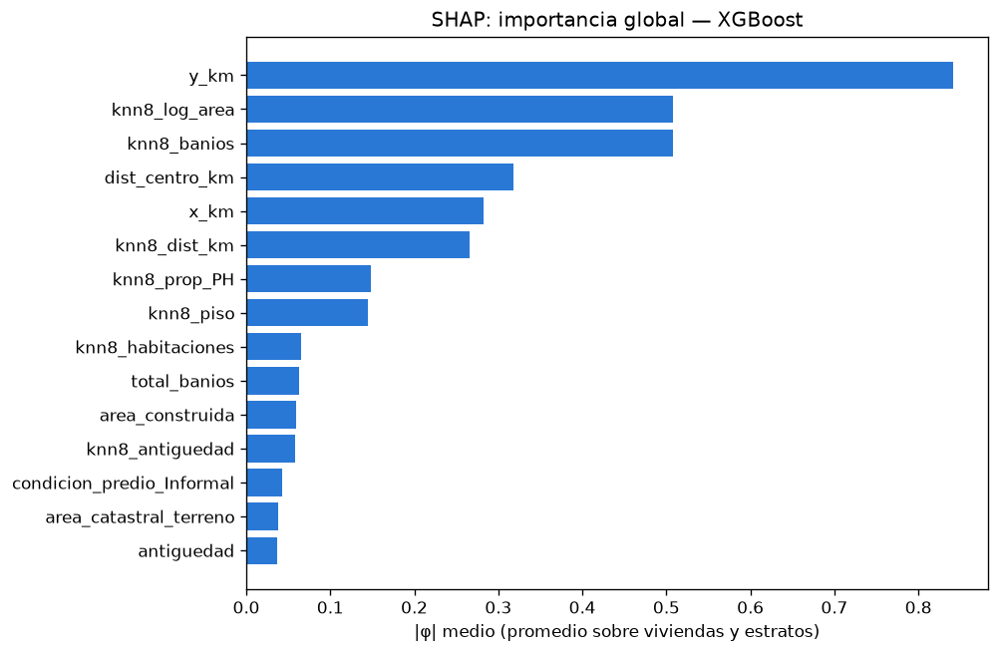
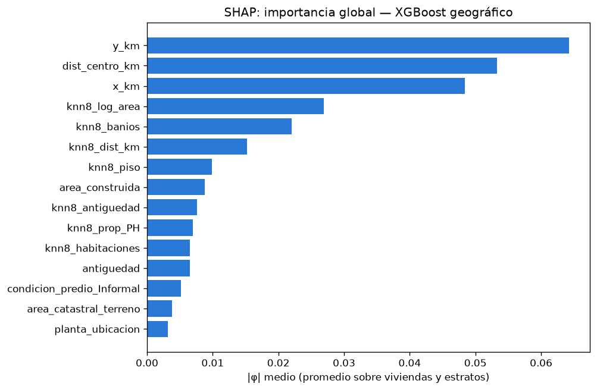
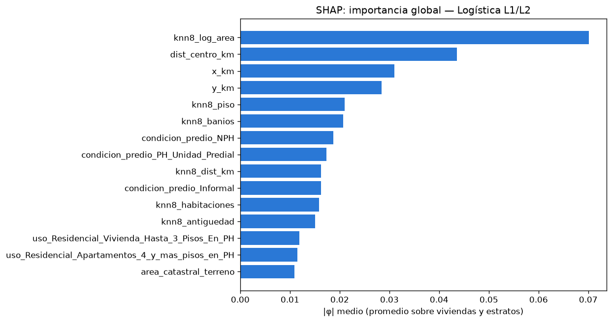
Los summary plots (beeswarm) muestran, para los estratos de los extremos, el efecto de cada variable en cada vivienda: a la derecha empuja hacia ese estrato, a la izquierda lo aleja.
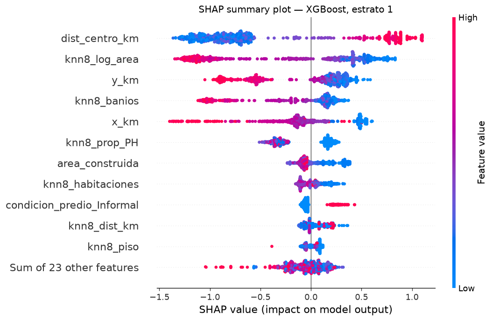
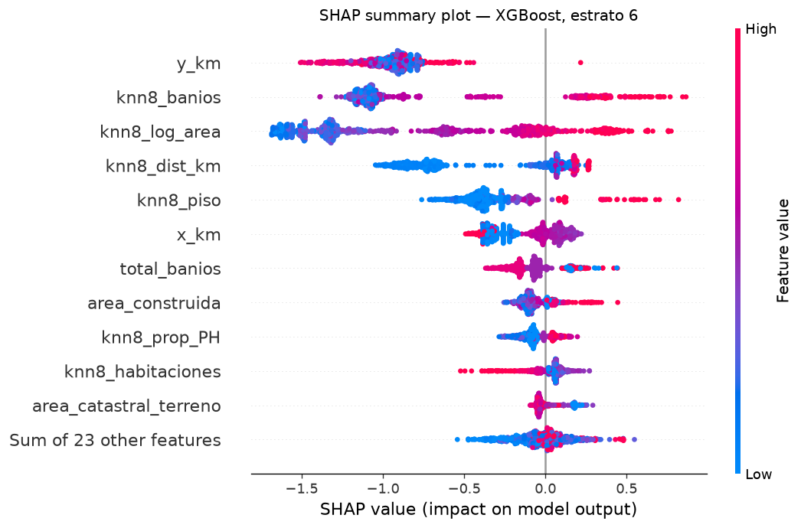
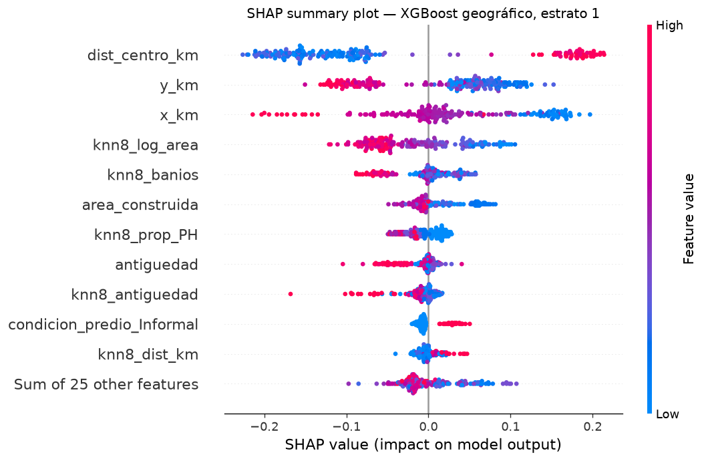
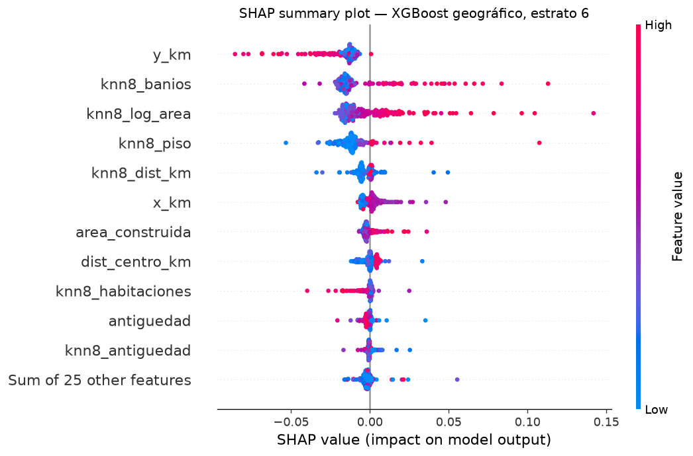
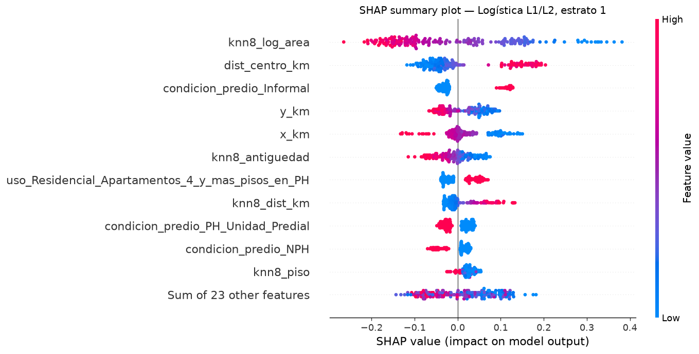
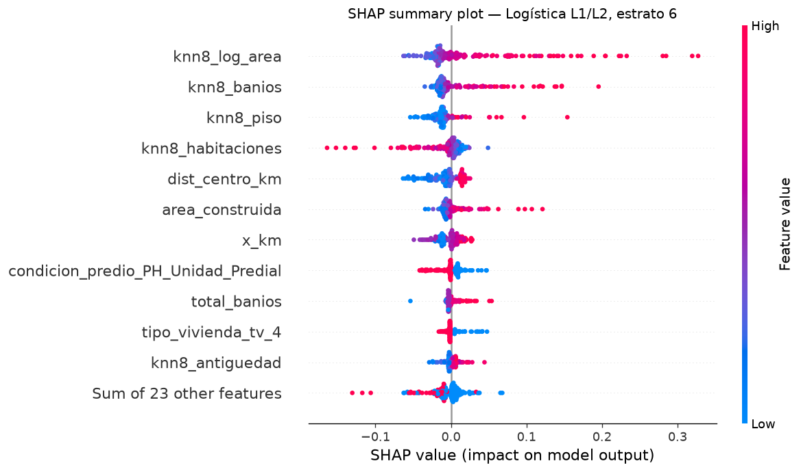
Escalas. En XGBoost, TreeSHAP reparte el margen del modelo (log-odds de cada estrato); en los modelos explicados por permutaciones, la probabilidad. Por eso las magnitudes no se comparan entre modelos, pero el orden de las variables sí.
Lectura. Los tres modelos cuentan la misma historia: el estrato lo deciden la ubicación y el entorno, no
la vivienda. En XGBoost, las variables más importantes son la posición norte-sur (y_km), el área y los
baños de los 8 vecinos (knn8_log_area, knn8_banios), la distancia al centro, la posición este-oeste y la
distancia típica a esos vecinos (knn8_dist_km, una medida de densidad); la primera variable propia de la
vivienda, sus baños, aparece en el décimo lugar con un peso 13 veces menor que y_km. En la logística el
orden es parecido (primero el área de los vecinos y la distancia al centro, luego las coordenadas), y aparece
la condición del predio (propiedad horizontal o no, informal) como única variable propia relevante.
Por estrato, los summary plots muestran mecanismos distintos para los dos extremos:
Estrato 1: lo explica sobre todo la distancia al centro (en XGBoost, |φ| = 0.84, la mayor, seguida del área de los vecinos con 0.68) y que los vecinos tengan viviendas pequeñas: las viviendas lejanas del centro con vecinos de poca área empujan hacia el 1.
Estrato 6: lo explican la posición al norte (
y_km, |φ| = 0.95) y vecinos con muchos baños y mucha área; la distancia al centro casi no importa (0.06). Es la geografía conocida de Barranquilla: los estratos altos se concentran en el norte, no en un anillo alrededor del centro.
Esto explica también por qué la vecindad física mejora tanto al modelo base (capítulo 9): las variables que más pesan son justo las que la logística B no tenía.
El XGBoost geográfico (en escala de probabilidad) ordena las variables igual que XGBoost: posición norte-
sur, distancia al centro, posición este-oeste y área y baños de los vecinos. Las coordenadas en km que solo
sirven para elegir el ancla de cada vivienda, x_km (ancla) e y_km (ancla), casi no pesan (|φ| = 0.002 para
la y, frente a 0.064 de y_km como variable del modelo). Es lo esperable con α = 0.97: los modelos locales
reciben solo el 3 % del peso, así que cambiar de ancla casi no mueve la predicción. En los modelos explicados
en probabilidad, las contribuciones al estrato 6 son pequeñas porque ese estrato es raro en el test (1.2 %) y
su probabilidad casi siempre es baja.
8.2 Explicaciones locales: una vivienda bien clasificada y una con error grande#
Gráficos waterfall: parten del valor base (la predicción promedio del modelo para ese estrato) y cada barra suma o resta la contribución de una variable hasta llegar a la predicción de la vivienda (por la propiedad de eficiencia, las contribuciones suman exactamente esa diferencia). Debajo, la explicación LIME de la misma vivienda: sus reglas son intervalos de las variables y sus pesos los coeficientes del modelo lineal local.
XGBoost — bien clasificada: estrato real 1, predicho 1 (probabilidad 0.93); R² del modelo local de LIME = 0.38; variables en común entre los 8 primeros de SHAP y de LIME: 4
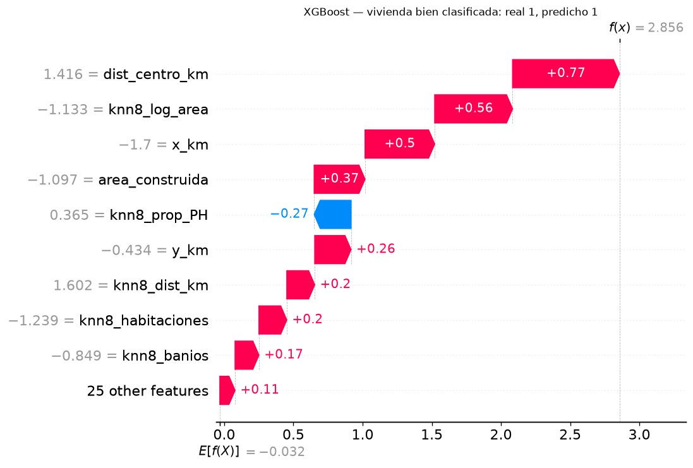
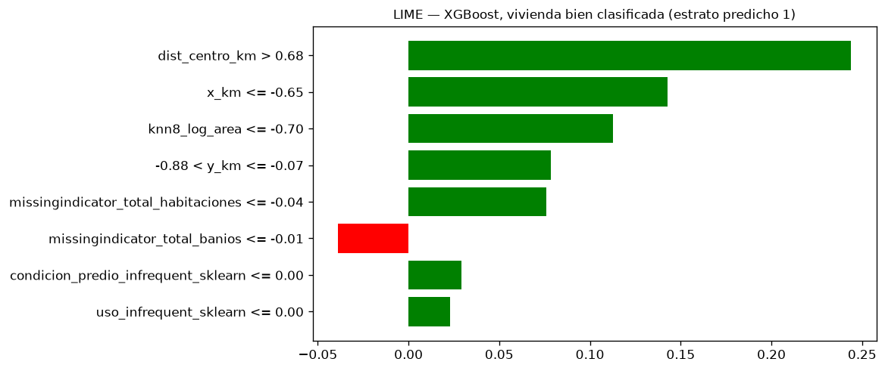
XGBoost — error grande: estrato real 2, predicho 4 (probabilidad 0.48); R² del modelo local de LIME = 0.12; variables en común entre los 8 primeros de SHAP y de LIME: 3
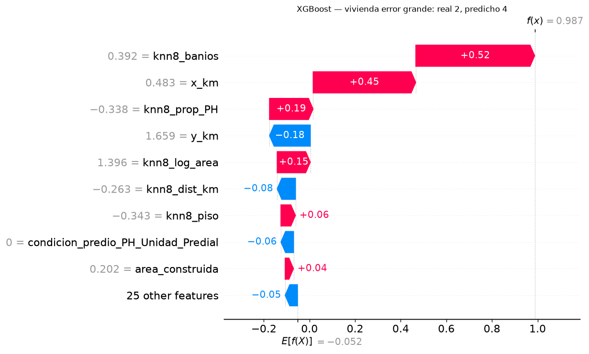
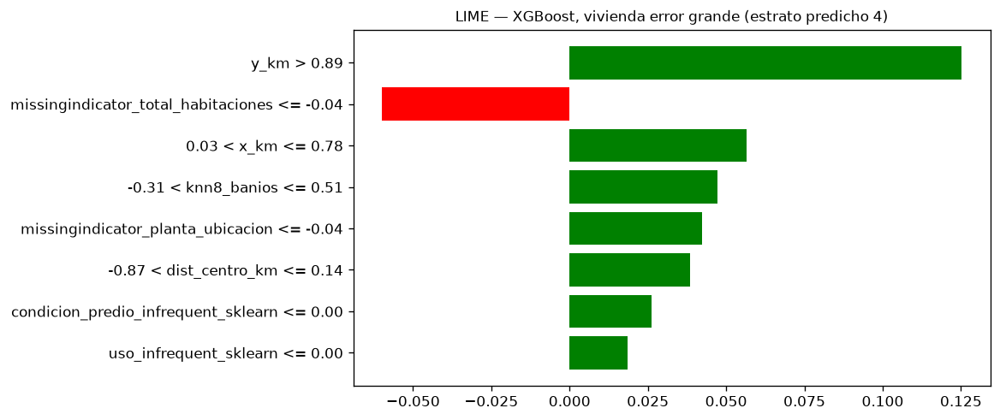
XGBoost geográfico — bien clasificada: estrato real 3, predicho 3 (probabilidad 0.44); R² del modelo local de LIME = 0.02; variables en común entre los 8 primeros de SHAP y de LIME: 1
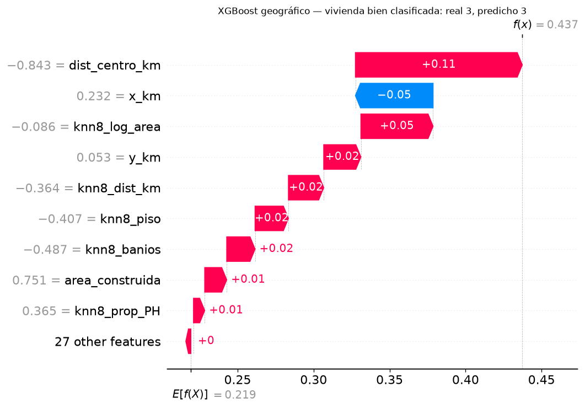
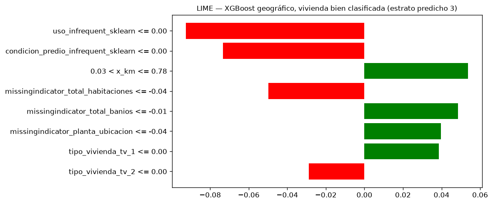
XGBoost geográfico — error grande: estrato real 4, predicho 2 (probabilidad 0.38); R² del modelo local de LIME = 0.08; variables en común entre los 8 primeros de SHAP y de LIME: 2
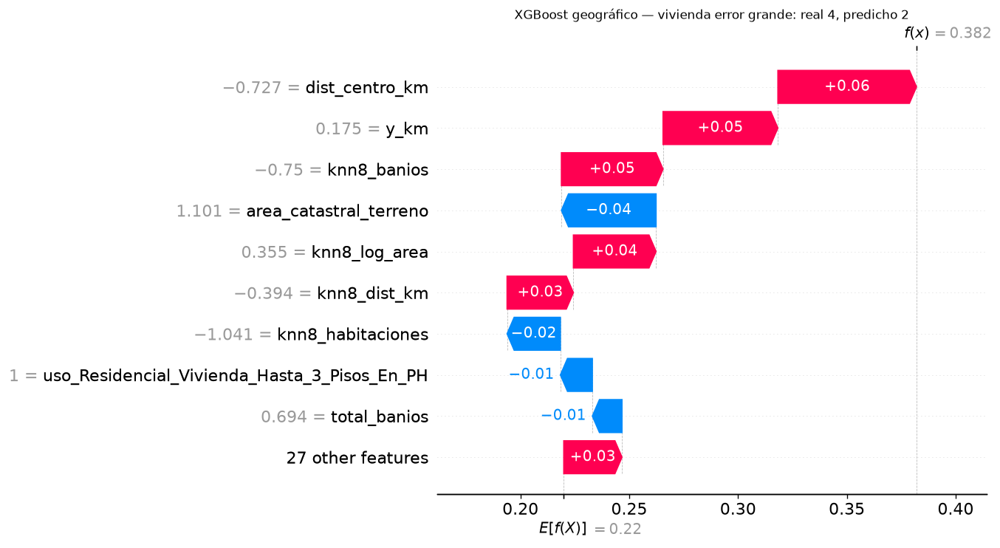
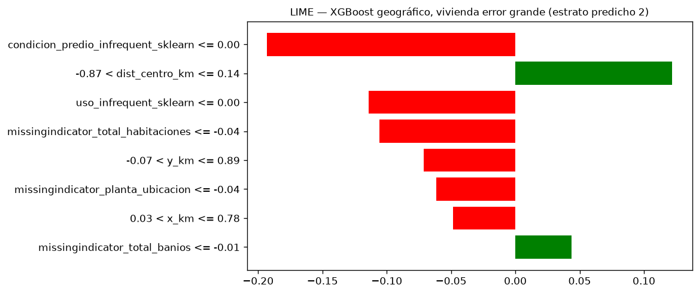
Logística L1/L2 — bien clasificada: estrato real 3, predicho 3 (probabilidad 0.56); R² del modelo local de LIME = 0.18; variables en común entre los 8 primeros de SHAP y de LIME: 4
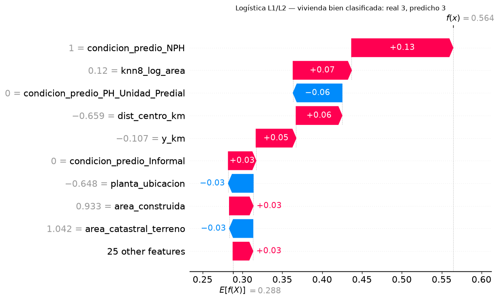
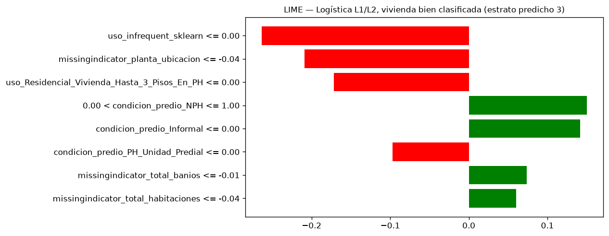
Logística L1/L2 — error grande: estrato real 3, predicho 5 (probabilidad 0.47); R² del modelo local de LIME = 0.29; variables en común entre los 8 primeros de SHAP y de LIME: 5
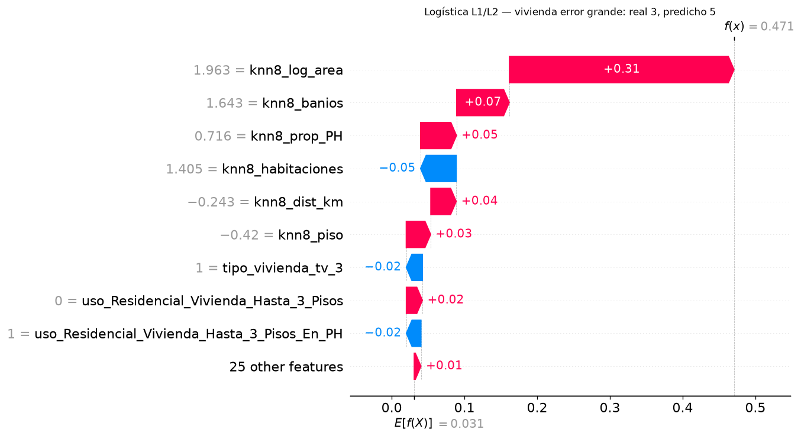
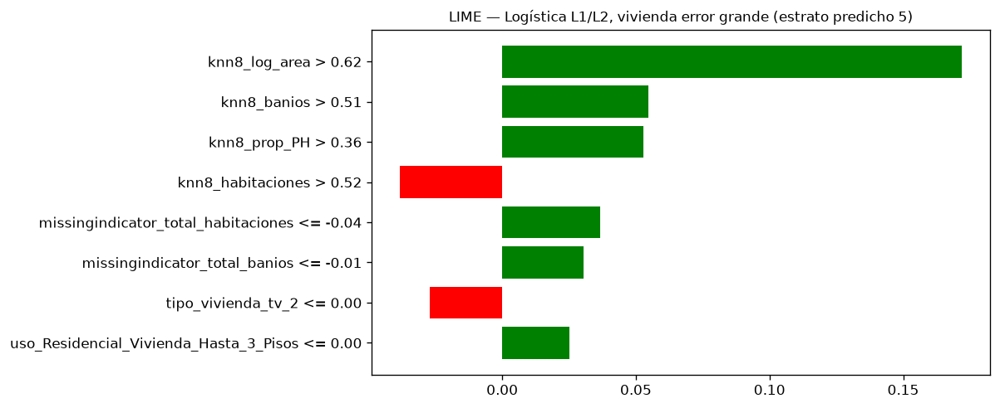
Lectura de los casos.
XGBoost, vivienda bien clasificada (estrato 1, probabilidad 0.93): la empujan hacia el 1 su distancia al centro (+0.77 en el margen), el área pequeña de sus vecinos (+0.56) y su posición al oeste (+0.50). LIME coincide en las mismas cuatro variables de ubicación y entorno, con reglas del tipo «distancia al centro alta» y «área de los vecinos baja».
XGBoost, error grande (estrato 2 predicho como 4, probabilidad 0.48): sus vecinos tienen muchos baños (+0.52) y su posición este-oeste es la de barrios de estrato 4 (+0.45). Es una vivienda modesta en una zona de transición: el modelo ve el barrio, no la casa.
Logística, error grande (estrato 3 predicho como 5): el área grande de sus vecinos (+0.31) domina la predicción. Mismo patrón: una vivienda de estrato medio rodeada de viviendas grandes.
SHAP frente a LIME. Coinciden en 3 a 5 de las 8 variables principales en XGBoost y la logística, y en 1 o 2 en el XGBoost geográfico. Divergen justo donde la teoría lo anticipa:
Calidad de la aproximación lineal local: el R² del modelo lineal de LIME va de 0.02 a 0.38. Con interacciones fuertes (el efecto del tamaño cambia con la ubicación), una recta local explica poco de la superficie de decisión de los árboles.
Variables binarias y correlacionadas: LIME perturba cada variable por separado y crea viviendas imposibles (un predio con indicadores de faltante encendidos al azar, o con
x_kmcambiado sin cambiardist_centro_km). Por eso aparecen en su lista indicadores de faltante y categorías «infrecuentes» que SHAP considera irrelevantes. SHAP, en cambio, reparte el efecto entre variables correlacionadas y sus contribuciones suman exactamente la predicción (propiedad de eficiencia).Inestabilidad: las reglas de LIME dependen de la discretización en cuartiles y del muestreo; las de SHAP, del fondo y, en las permutaciones, de la semilla, que aquí está fija.
Para este problema, SHAP es la explicación más confiable; LIME sirve como verificación rápida cuando las dos coinciden.
8.3 Regresión: el mejor modelo del estrato como número#
Modelo: Random Forest (regresión) | Grid {'n_estimators': 150, 'max_depth': 20, 'max_features': 0.3, 'min_samples_leaf': 2}
| |φ| medio (estratos) | |
|---|---|
| knn8_banios | 0.3036 |
| y_km | 0.2766 |
| dist_centro_km | 0.2738 |
| knn8_log_area | 0.2418 |
| x_km | 0.0917 |
| knn8_prop_PH | 0.0900 |
| knn8_piso | 0.0606 |
| knn8_dist_km | 0.0485 |
| area_construida | 0.0404 |
| total_banios | 0.0334 |
| condicion_predio_Informal | 0.0313 |
| uso_Residencial_Vivienda_Hasta_3_Pisos | 0.0270 |
| knn8_habitaciones | 0.0190 |
| antiguedad | 0.0136 |
| knn8_antiguedad | 0.0135 |
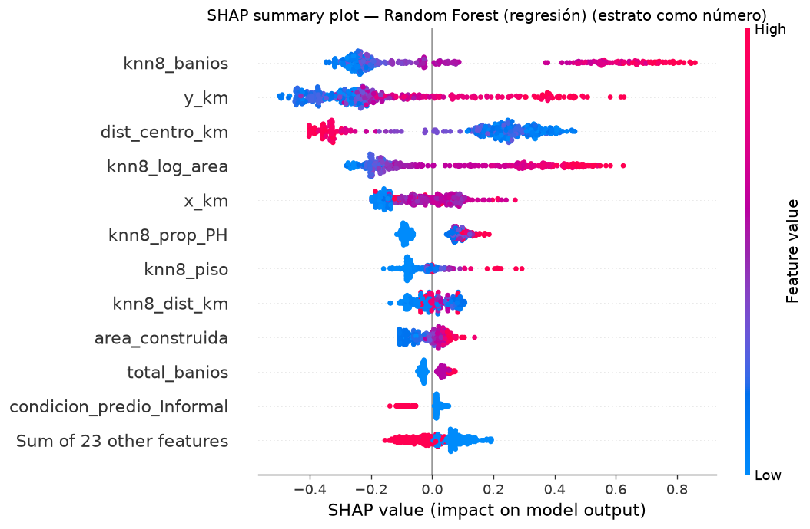
bien predicha: estrato real 3, predicho 2.86
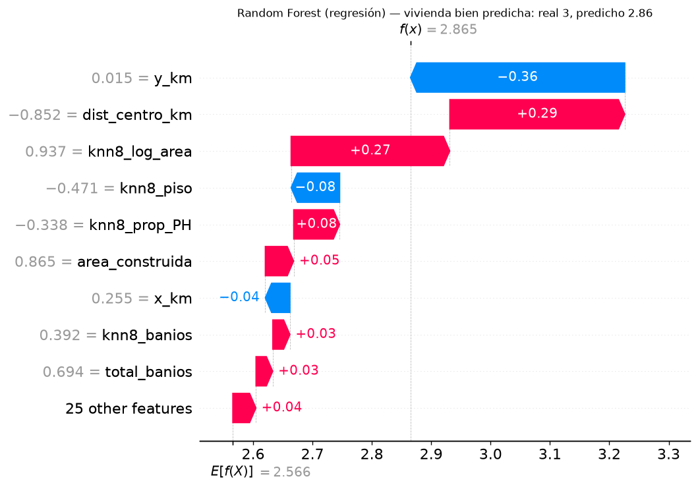
error grande: estrato real 5, predicho 2.92
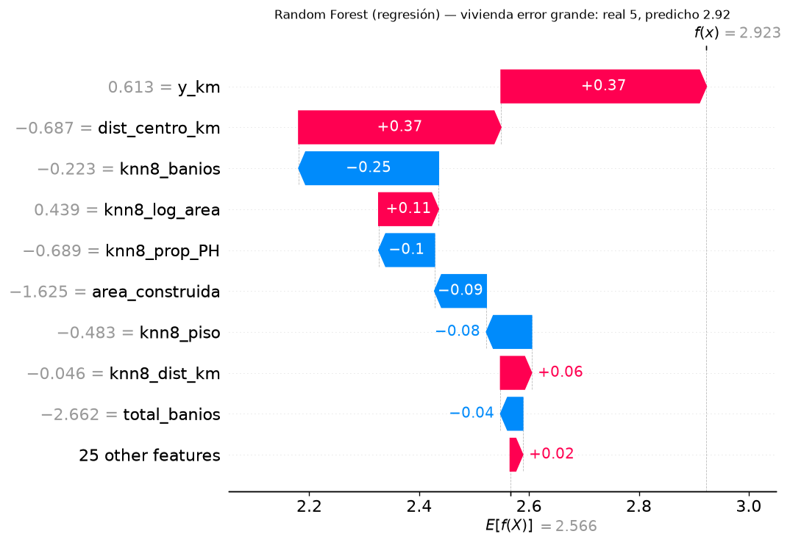
Lectura. En el mejor modelo de regresión (Random Forest, estrato como número), las cuatro variables más importantes son las mismas de la clasificación: baños y área de los vecinos, posición norte-sur y distancia al centro, con |φ| medio de 0.24 a 0.30 estratos cada una; la primera variable propia de la vivienda (su área construida) aporta 0.04. Los waterfalls parten del valor base de 2.57 (el estrato medio de la submuestra):
Bien predicha (estrato 3, predicción 2.86): su posición al sur la baja (−0.36), pero la distancia al centro y el área de sus vecinos la suben (+0.29 y +0.27).
Error grande (estrato 5, predicción 2.92): su ubicación la sube (+0.37 por
y_kmy +0.37 por la distancia al centro), pero sus vecinos tienen pocos baños (−0.25). Es el caso simétrico al de la clasificación: una vivienda de estrato alto en un entorno modesto. La regresión además comprime los extremos (capítulo 6), así que no se atreve a predecir un 5.